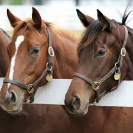
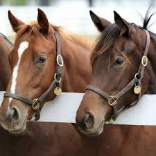

At first I was part of the IHSA (International Horse Show Association) and was ridden by many different people.
Kristy came and rescued me from there because of the abuse I felt. They would make me show with people that I didn't know.
I didn't want to do that. It got to the point that my old owner was going to put me down because I was having to many
temper tantrums because of the way I was being treated. Kristy rehabilitated me and I would only let her ride me until
Emily came along and that changed everything for me. In these kinds of horse shows, you don't know what your getting. They are all college students that have never met you before.
Sometimes the person knows what horse they are riding the day before, but they can't get on the horse until they are about to show.
The only advantage to knowing the day before is that you are able to see the horse warm up before you get on them. Sometimes
everything is random and you find out right before you ride what horse you are going to be riding. You never know.
This is very scary for the horse and the rider. Trying to perform when the rider doesn't know you and doesn't know how you do anything
is very intimidating.
Here are some pictures from that type of horse show
 

Some videos from the way some horses react on the next page!